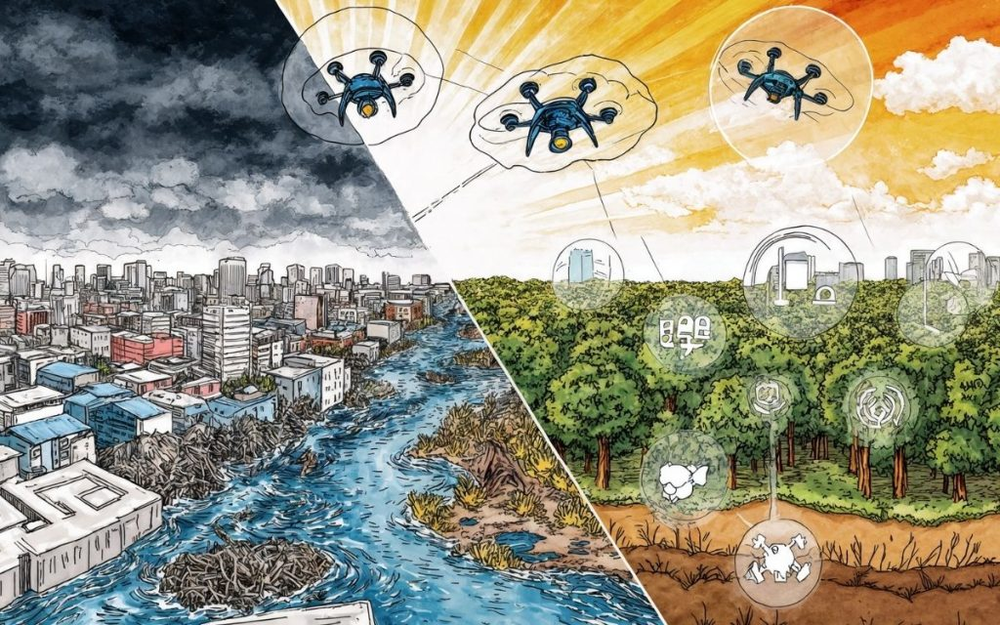
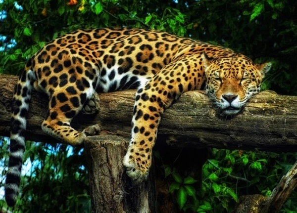
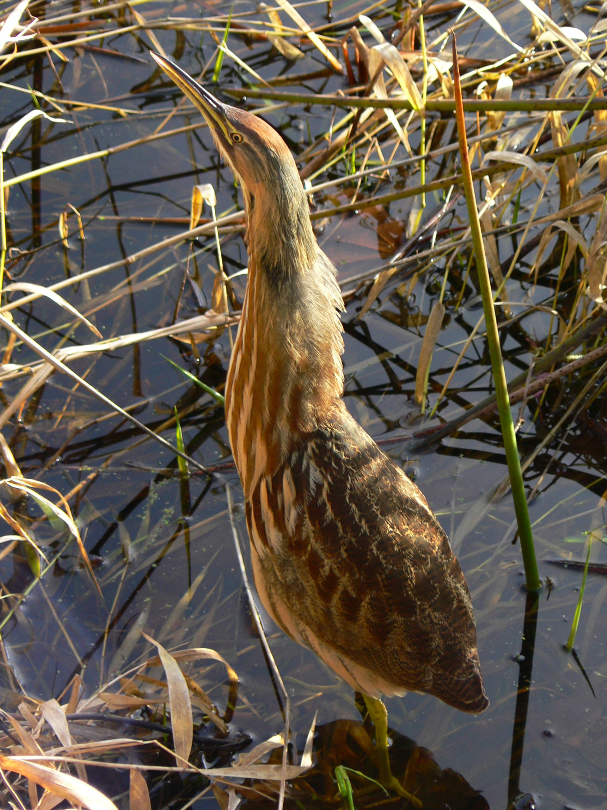

Suspiro
News
Meio Ambiente
Aqui você acompanha notícias, projetos e informações sobre MEIO AMBIENTE no Brasil e no mundo
.jpeg) pngtree
pngtreeVerde que salva o planeta
São Paulo e Paraná avançam no plantio e reflorestamento, mas especialistas alertam: só a natureza não basta — tecnologias verdes e políticas globais são urgentes para frear a crise climática..

esbrasilTecnologia e natureza contra a crise climática
Combinar inovação tecnológica e soluções da natureza é essencial para frear a crise climática. Ação global e políticas rápidas são urgentes.

Crédito: kerstingu/Creative CommonsOnça-pintada cresce na Mata Atlântica
A restauração da Mata Atlântica e criação de corredores de vida selvagem ajudaram a população de onças-pintadas do Alto Paraná a crescer 160% desde 2005.
.jpeg) meus animais
meus animaisDugongos ganham esperança
A restauração de prados de ervas marinhas e habitats costeiros ajuda a salvar os dugongos, o único mamífero herbívoro do oceano, evitando sua extinção.
.jpeg) Foto: Divulgação
Foto: DivulgaçãoCobra quase extinta renasce
A Antiguan Racer, antes a cobra mais rara do mundo, cresceu de 50 para mais de 1.100 indivíduos graças à remoção de predadores invasores e à restauração de ilhas em Antígua e Barbuda.

Refúgio Nacional de Vida Selvagem de NisquallyAbetouro retorna ao Reino Unido
Após quase desaparecer, o abetouro voltou a cantar em zonas úmidas restauradas na Inglaterra, mostrando o impacto positivo da restauração de ecossistemas.
 Foto: Divulgação/Parque Nacional de Virunga
Foto: Divulgação/Parque Nacional de VirungaGorila-das-montanhas tem gêmeos raros
No Parque Nacional de Virunga, uma gorila-das-montanhas deu à luz gêmeos, um evento raro que simboliza esperança para a espécie ameaçada de extinção.
.jpeg) Doctum TV - Oficial
Doctum TV - OficialMais de 30 araras-azuis juntas no Pantanal
Um fotógrafo registrou mais de 30 araras-azuis reunidas em uma única árvore no Pantanal, um raro espetáculo da vida selvagem que destaca a riqueza do bioma.